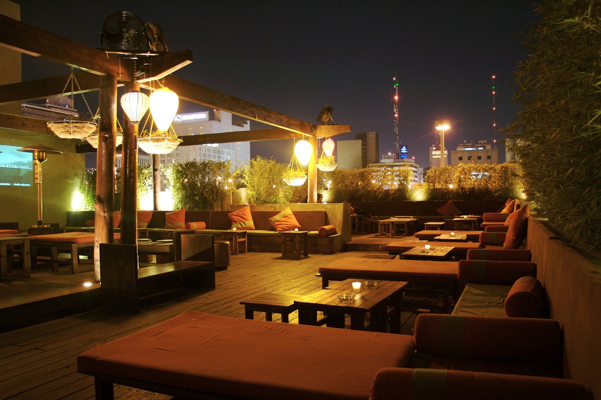

Restaurante · abierto a todos
Salmorra
Salmorra es la salmuera con la que los pescadores de Altea curaban el pescado. Aquí es una forma de cocinar: poco, bien y con lo que trae el mar ese día.

La cocina
Marta Llorca baja a la lonja a las seis. El menú lo decide la subasta.
Nacida en el barrio de pescadores de Altea, Marta cocinó ocho años en San Sebastián antes de volver a casa. Su cocina es de leña y de paciencia: arroces secos en paella de hierro, pescado de roca a la brasa, salazones propias y verduras de la huerta de Callosa d’en Sarrià.


La azotea · de 18:00 a 00:30
Vermut al atardecer, cócteles con estrellas.
Doce mesas, la piscina iluminada y una carta corta de cócteles con hierbas del jardín: el Albar Spritz lleva limón de nuestros árboles y vermut de Alicante.
Reservar mesa
Guarda tu mesa.
- Desayuno08:00 – 11:30
- Comida13:30 – 16:00
- Cena20:00 – 23:00
- Bar de la azotea18:00 – 00:30
Ves solo las horas con sitio y la mesa queda confirmada al momento. Descanso los martes.
¡Hecho! Mesa reservada.
Si necesitas cambiarla, escríbenos al conserje o por WhatsApp.